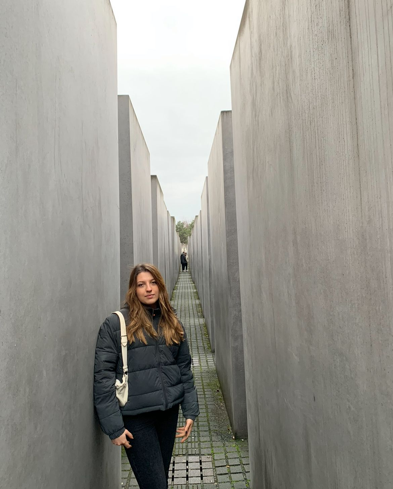
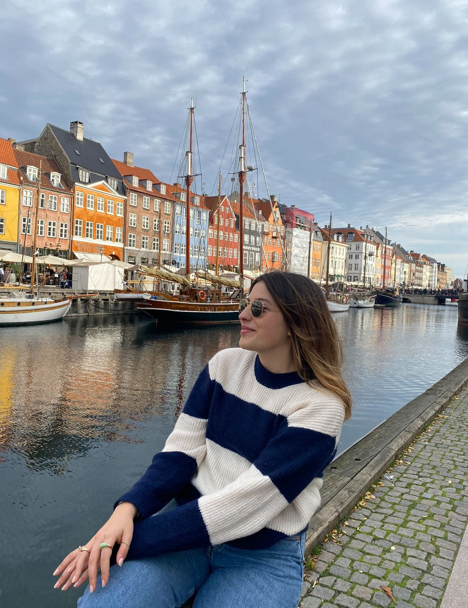

Mijn Vakantie Verhaal
-
Nederland(Amsterdam)

Al een tijdje woon ik in Uithoorn, vlakbij Amsterdam. Mijn school ligt ook heel dicht bij het centrum, dus ik heb vaak de kans om naar Amsterdam te gaan. Ik ben erg blij in Amsterdam te zijn; de culturele huizen hier lijken erg origineel voor mij. Onlangs heb ik een boottocht gemaakt om mijn familie rond te leiden, en een van de lokale jongens vertelde me dat veel van de gebouwen in Amsterdam niet kunnen worden veranderd. Ik denk dat ze op deze manier een prachtige uitstraling hebben. Hoewel Amsterdam een drukke stad is, vind ik het een geweldige stad vanwege de talloze dingen die je hier kunt doen.
-
Duitsland(Berlijn)
Berlijn sinds de oorlog draagt veel herinneringen met zich mee. Binnen de stad is de Berlijnse Muur nog steeds niet afgebroken, en ik denk, gebaseerd op mijn eigen ervaringen, dat het een beetje een dure stad is. Ik zou zeker in Berlijn kunnen wonen. Het doet me denken aan mijn eigen land, Istanbul, waar ik 16 jaar heb gewoond maar ik kan geen opmerkingen maken over onderwijs en de mensen.
-
Denemarken(Kopenhagen)
Ik ben twee dagen naar Denemarken gegaan met mijn neef. Het is een van de mooiste plaatsen die ik heb gezien maar tegelijkertijd ook erg duur.
-
Turkije(Istanboel)

Turkije is mijn favoriete land. Ik heb altijd van drukke steden gehouden. Istanbul zoals de meeste mensen weten is een extreem drukke stad. Wat ik het leukst vind om in Turkije te doen is dat er zoveel te doen is
-
Belgie(Anvers)

België is niet een van mijn favoriete landen. Ik heb niet veel positieve gedachten over België. Ik ben er al een lange tijd niet meer geweest. Ik vind de kerken en gebouwen mooi, maar verder vind ik het een saaie stad
-
Frankrijk(Parijs)

Toen ik naar Frankrijk ging was ik nog erg jong. Het is al lang geleden maar het is een zeer romantische stad hoewel het in de zomer erg heet kan worden. Ik denk dat het perfect is voor een vakantie vooral als je met je partner bent.